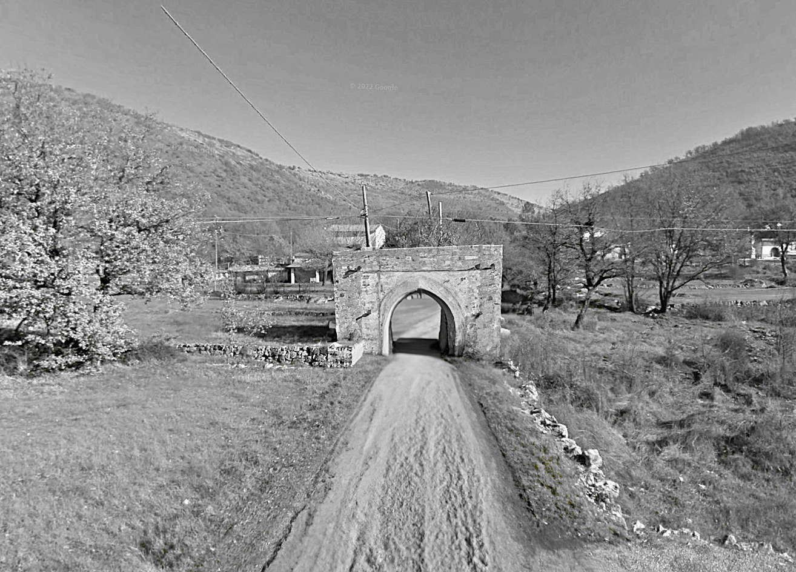

L'antica porta che dava accesso al Campo delle Stelle. Da qui una strada tortuosa e scoscesa, ormai impraticabile dagli abitanti del paese.
L'altro accesso alle Montagne. La strada è molto accidentata e ci sono stati numerosi avvistamenti di cinghiali serpenti.
Una delle porte più antiche. Se cercate qualcosa, proseguite oltre questa porta e superate il primo bivio. Là, dove la strada percorre un piccolo ponte.
La Porta del Rospo è l'accesso alla Pianura dalla strada principale. Qui è stata avvistat per la prima volta una creatura mitologica, metà uomo e metà scimmia.
Uno sguardo verso il paese, uno verso la Pianura. Scendendo a valle, scartato il bivio a destra, ciò che vi serve sarà sulla sinistra.
L'accesso all'area dello Zingaro, un tempo abitato da antiche tribù di guerrieri capaci di cavalcare i cinghiali serpenti. In fondo si trova il loro santuario.
Dal luogo dei morti si apre la zona dei Pozzi. La porta un tempo proteggeva anche le tombe degli antichi abitanti del paese.
Vi basterà seguire questo antico accesso alla strada del Mare. Ma attenzione, dopo questa porta dovrete proseguire a piedi.

Questa porta divideva non solo due zone, ma anche due paesi. Da qui infatti parte l'antica strada per Ocip.
La porta più inaccesibile di tutte, un tempo a protezione dalla Radura del Faggio, luogo sacro e mistico, nel cuore dell'area delle Montagne. Il santuario si raggiunge in più di un'ora a piedi.
La porta che più velocemente conduce all'area dei Pozzi. Da qui vi aspetta un percorso non banale. Superate le numerose visioni e, prima del santuario dei Pozzi, svoltate a destra, fin dove la strada incontra l'acqua.
Il punto di accesso all'area dei Casali provenendo dal paese. Luoghi infestati, creature misteriose, strade ancora inesplorate.